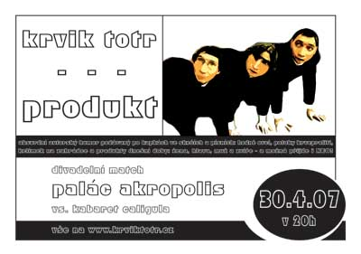
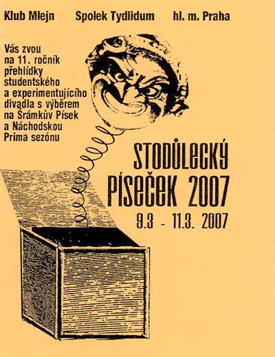
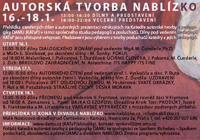

|
Produkt (duben 2007)
Plakát A4, leták
Design: Petr Jediný Novotný |
 |
|
Stodùlecký Píseèek (bøezen 2007)
Plakát A3, A4, leták
Design: organizátoøi stodùleètí |
 |
|
Autorská tvorba nablízko (leden 2007)
Plakát A2, leták
Design: Terezka a Zdenìk Durdilovi |
 |
© 2003 Krvik Totr Limity.